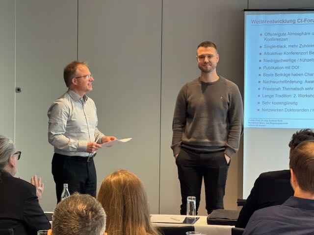
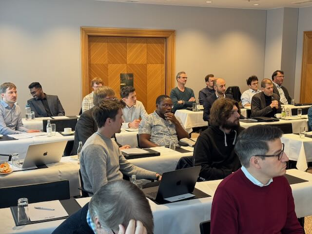
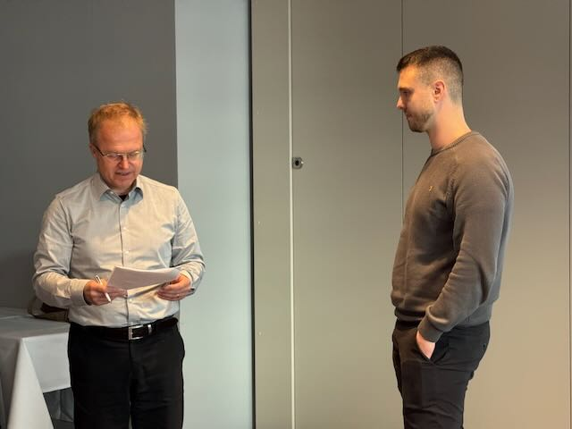
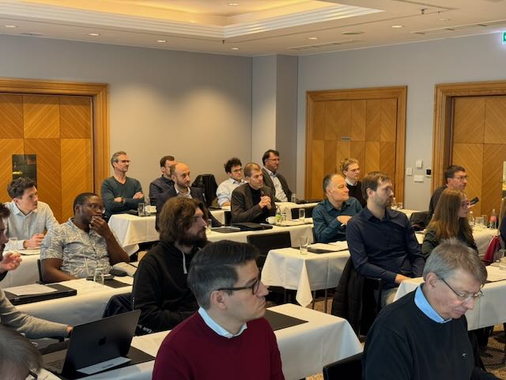
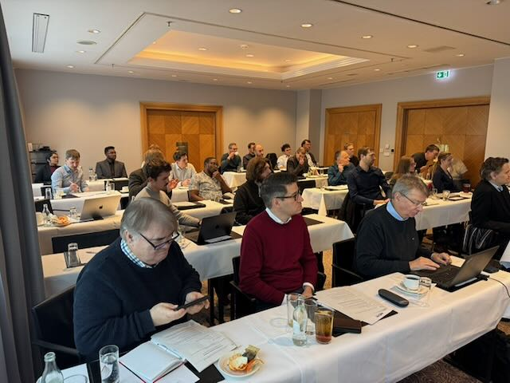
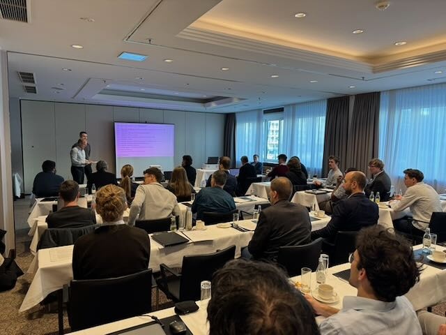
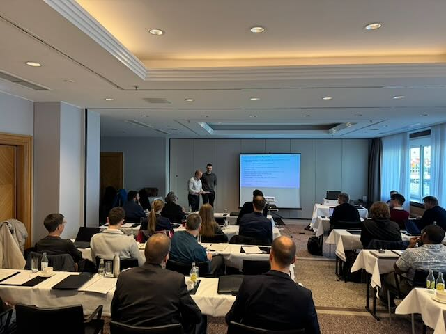
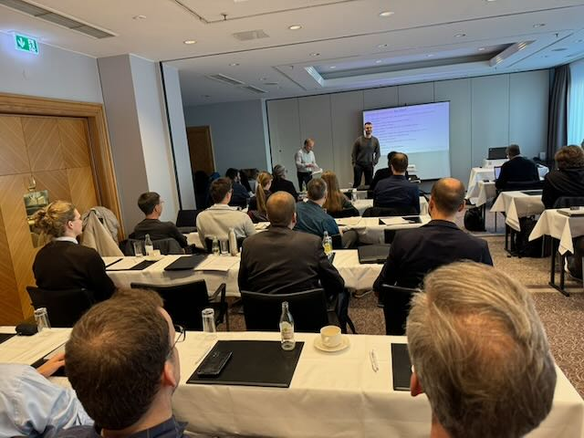
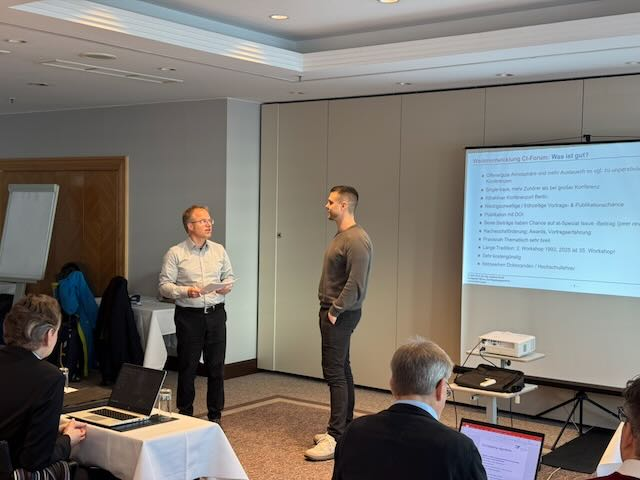
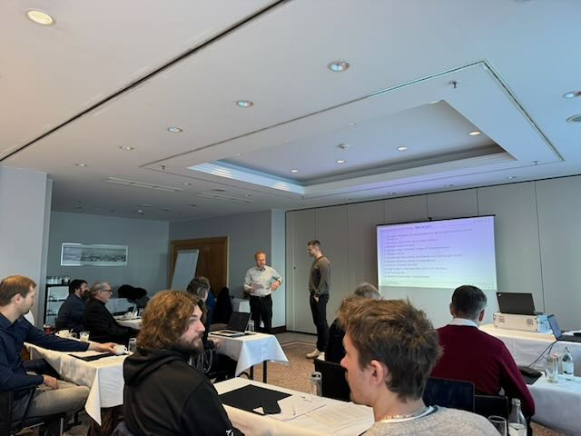

Young Author Award 2025: THK-AI Doctoral Candidate Honored at CI Workshop Berlin
Alexander Hinterleitner, doctoral candidate at the Institute for Data Science, Engineering, and Analytics (IDE+A) of the THK-AI Research Cluster at TH Köln, has been awarded the prestigious Young Author Award at the 35th Workshop Computational Intelligence in Berlin. The award recognizes his outstanding contribution titled „Tuning for Explainability: Incorporating XAI Consistency into Multi-Objective Hyperparameter Optimization“. The workshop proceedings (Open Access) can be downloaded from the Karlsruher Institut für Technologie (KIT) Bibliothek: https://publikationen.bibliothek.kit.edu/1000186052. The BibTeX entry reads as follows:
@inproceedings{hint25b,
author = {Hinterleitner, Alexander and Leitenmeier, Christoph and Spengler, Sebastian and Bartz-Beielstein, Thomas},
booktitle = {Proceedings - 35. Workshop Computational Intelligence: Berlin, 20. - 21. November 2025},
doi = {10.5445/IR/1000186052},
editor = {Schulte, Horst and Hoffmann, Frank and Mikut, Ralf},
pages = {121-130},
publisher = {{KIT Scientific Publishing}},
series = {{AIA Proceedings}},
title = {Tuning for Explainability: Incorporating XAI Consistency into Multi-Objective Hyperparameter Optimization},
year = {2025}}The Young Author Award is presented annually by the Computational Intelligence Forum to promote young researchers in the field. It honors creativity and originality in methodological approaches as well as particularly successful applications. This year’s award committee selected Hinterleitner’s work for its innovative approach to treating explainability as a quantifiable design objective in machine learning systems.










Hinterleitner’s research addresses a critical challenge in applied artificial intelligence: ensuring that machine learning models are not only accurate but also interpretable and trustworthy. His work proposes a novel framework for incorporating consistency among diverse explainability methods directly into the hyperparameter optimization process. This research was conducted in collaboration with industry partner Everllence SE, demonstrating the practical relevance of the approach.
The doctoral research is jointly supervised by Prof. Dr. Thomas Bartz-Beielstein from the THK-AI Research Cluster at TH Köln and Prof. Dr. Oliver Niggemann from the Helmut-Schmidt-University (HSU) Hamburg. This cooperative supervision structure builds on a long-standing research collaboration between both institutions.
„This award represents a significant success for the THK-AI Research Cluster and demonstrates the excellence of our doctoral training programs,“ stated Prof. Dr. Thomas Bartz-Beielstein. „Alexander’s work exemplifies how fundamental research in explainable AI can be effectively combined with industrial requirements to create practical solutions for trustworthy machine learning systems.“
The recognition at the CI Workshop Berlin underscores the research cluster’s commitment to advancing the state of the art in AI methods while maintaining strong ties to industrial applications. The THK-AI Research Cluster at TH Köln continues to focus on developing AI solutions that meet both scientific rigor and practical applicability standards.
The award was presented during the 35th Workshop Computational Intelligence, chaired by Prof. Horst Schulte (HTW Berlin), which brought together leading researchers and practitioners from academia and industry to discuss recent advances in computational intelligence and its applications in engineering and automation.
Contact:
Prof. Dr. Thomas Bartz-Beielstein
THK-AI Research Cluster
Institute for Data Science, Engineering, and Analytics (IDE+A)
TH Köln
Steinmüllerallee 1
51643 Gummersbach